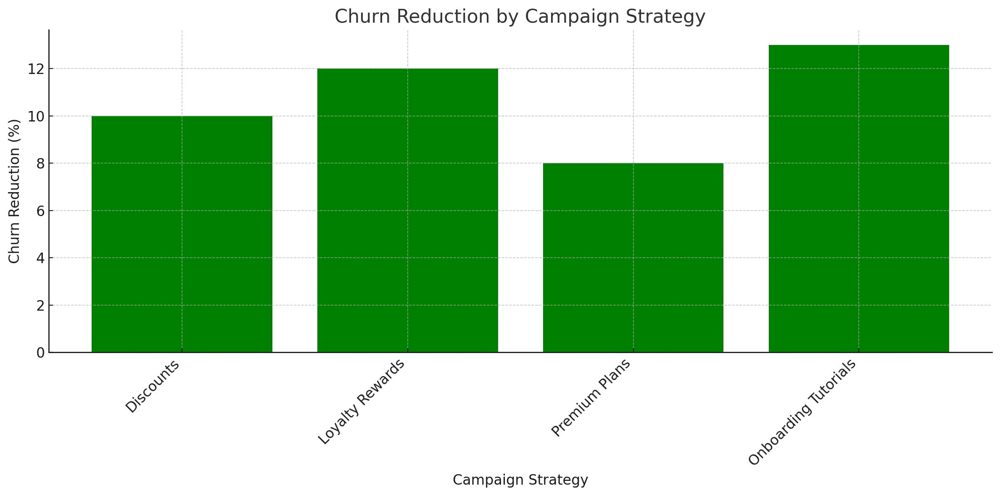
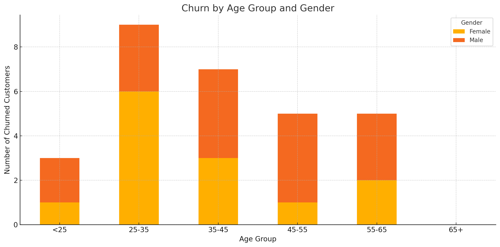
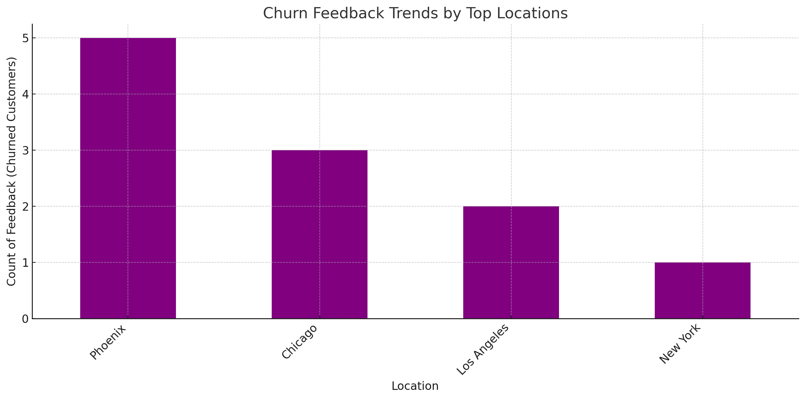
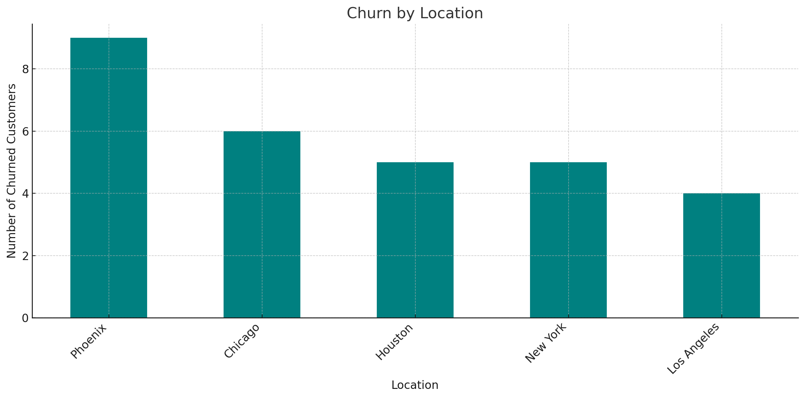
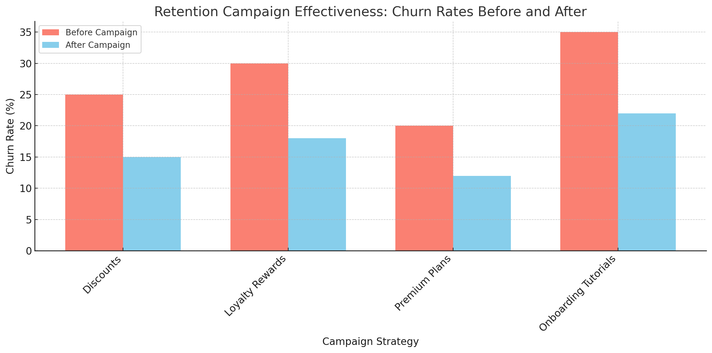

Churn Visualizations¶
Purpose¶
The visualizations provide a clear view of churn behavior, the factors driving churn, and trends over time. The following visualizations are included:
1. Churn Drivers Visualization¶
What it Shows:
A bar chart displaying the proportion of customers flagged as churned due to:
- Low Usage (Usage frequency < 5)
- Negative Feedback (Rating < 3)
- No Transactions (No payment activity)
How to Interpret:
This visualization highlights which factors contribute most to customer churn. Businesses can prioritize actions to address the most significant drivers.
2. Churn Over Time¶
What it Shows:
A time-series visualization showing the number of churned customers on a daily, monthly, and yearly basis.
How to Interpret:
This visualization highlights when customers are most likely to churn. Businesses can take action by identifying seasonal patterns or critical timeframes for customer retention efforts.
3. Churn Distribution¶
What it Shows:
A pie chart displaying the proportion of customers who churned versus those who did not churn.
How to Interpret:
This visualization gives a snapshot of churn vs. non-churn. If the churn rate is high, targeted retention efforts may be required.
Example Visualizations¶




